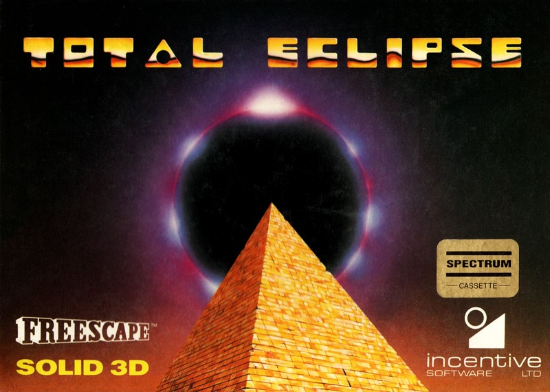
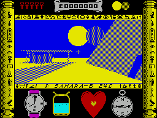
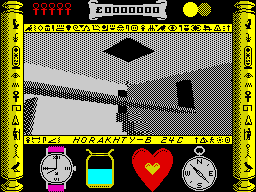

Total Eclipse


{kind=link}

| Publisher: | Incentive |
| Price: | £9.95 cass 14.95 disk |
| Year: | 1988 |
| Source: | CRASH, Issue 60 |

Eat your heart out Indiana Jones
This is the picture — you are standing beside your 1930s biplane in the Sahara desert, overshadowed by one of the great pyramids. A firm believer in the occult, you’ve been alarmed by learning of a curse laid on this place. The pyramid was built in ancient times with a special chamber at its Apex for the ancient Egyptian sun-god, Re. The sole reason for its construction was as a curse on the people who had revolted against the High Priest. And if anything should obscure the sun’s rays during daylight hours the curse will be fulfilled and the Moon explode.
Now here’s your problem: a total eclipse of the sun is due in just two hours time. Your thankless task is to find Re’s shrine and destroy it before the eclipse brings about a catastrophic disaster. Your equipment for this task is about the best the 1930s could provide: a revolver, wrist watch, compass, and water bottle, which can be topped up from water troughs found inside the pyramid.

fantastic freescaped puzzle pyramid
The many rooms of the pyramid (all portrayed in glorious Freescape) contain many objects, including chests of treasure, jewels and Ankhs — special symbols which can be used to open the barriers on some of the doors. Stairways allow access to higher levels of the pyramid, but the route to the shrine is a tortuous one which can only be completed by solving a variety of mysterious puzzles.
Time may be your worst enemy in this quest, but is not your only one: poisoned dart booby-traps can prove fatal, while falling off high ledges isn’t too healthy either. Your health is shown by a heart, the faster it beats the nearer a fatal heart attack. If you want you can slow it down by resting, a special function which speeds up time until your health’s restored. The Freescape technique was impressive in Driller and Dark Side, but Total Eclipse uses it to its full potential, creating a sinister, claustrophobic atmosphere to suit the Egyptian scenario. The pyramid is full of nasty surprises and mysteries that will take a long time to discover. In fact I think Total Eclipse is probably the best Freescape game yet, with much more attention paid to deep game content. This is one that should keep you playing until you complete it.
PHIL ... 92%
ANKHS FOR THE MEMORY (AND THE TIPS)

- Search all the nooks and crannies for Ankhs and treasures.
- Shoot at any symbols which appear on the walls — some of them open doors.
- Top up your water bottle whenever you get the chance: thirst is not good for your heart.
- Watch out for nasty mummies — shoot them to make them close their sarcophaguses.
- When moving along narrow catwalks, reduce your step size to avoid falling off so easily.
- Make a map of each floor level, and do some origami to make a 3-D model!
First there was Driller, then came Dark Side, and now Total Eclipse is set to blow the socks off the gamesplaying fraternity. And being an Incentive game the Freescape technique is as stunning as ever. I must say that I was slightly surprised that the futuristic scenario present in the last two games has been changed to an Indiana Jones-type adventure. The same devious puzzles and traps survive, though, and the old grey matter is given some tricky situations to sort out. But then CRASH readers are a brainy bunch so you shouldn’t have too much trouble. Total Eclipse is a brilliant game which gives Incentive a hat trick of successes, well done guys.
MARK ... 95%
The only way is up, and to get there you have a colossal but thoroughly enjoyable task in this new Incentive Freescape game. As you should all know by now, the Freescape technique makes for fantastic gameplay and whatever idea Incentive put into one of these games, it’s bound to be a hit. Total Eclipse is no exception, the idea of exploring a pyramid to find the shrine of the sun-god Re has great potential, and with a time limit of two hours the excitement and addictiveness soon mounts. Once you have a basic understanding of what all the weird hieroglyphics mean, and what function they perform, you can begin to get somewhere in the game. Fortunately, you can always save your position (to tape or disk) and continue when you feel like it (and it will take more than one go to complete). Total Eclipse is bigger than its predecessors but, in my opinion, doesn’t beat the playability of Dark Side. Still, there’s plenty more Freescape action to get stuck into with Total Eclipse and it should keep you occupied for quite a while. Incentive have done it again!
NICK ... 93%
THE ESSENTIALS
| Joysticks: | Cursor, Kempston, Sinclair |
| Graphics: | The Freescape solid 3-D is just as impressive as ever, but seems slightly faster (5-10%) than in its predecessors |
| Sound: | No tunes, but some good, informative effects |
| General rating: | The third Freescape game takes a new theme and is — probably — the most playable so far |
| Presentation: | 90% |
| Graphics: | 93% |
| Sound: | 58% |
| Playability: | 93% |
| Addictive qualities: | 92% |
| Overall: | 93% |